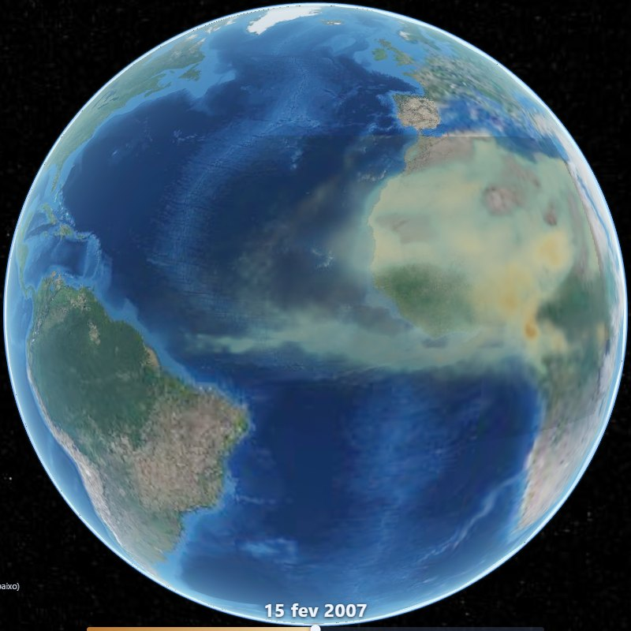
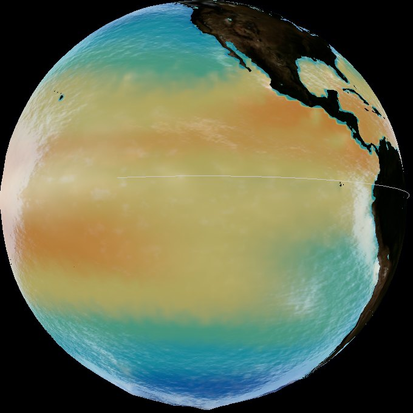
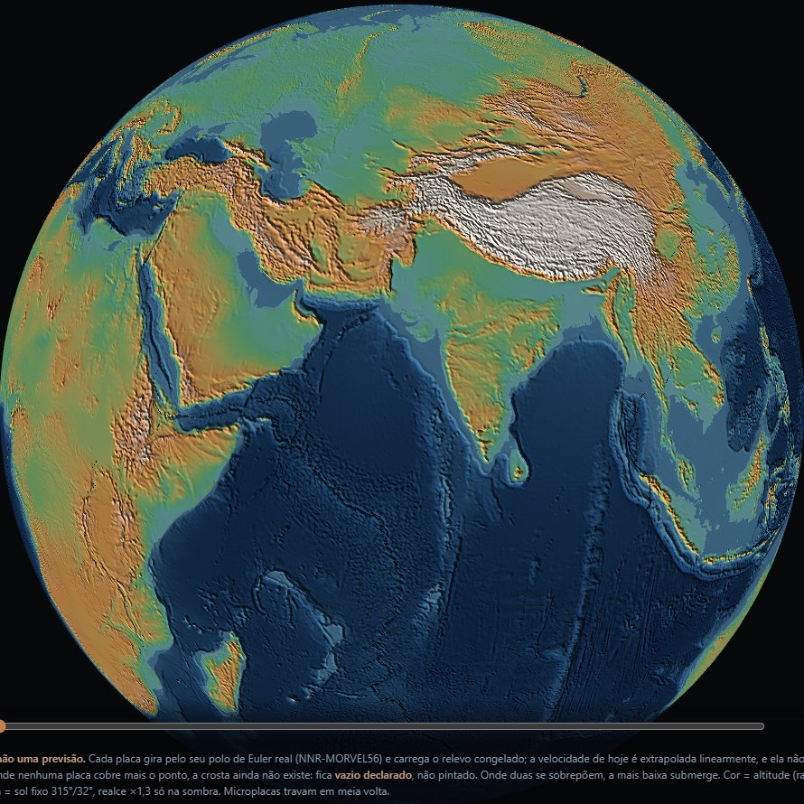

A Ponte de Poeira012 · NASA MERRA-2 · dez 2006 – abr 2007atualizada em 12 set 2026

El Niño011 · NOAA OISST · jan 2020 – set 2026atualizada em 11 out 2026

A Terra Nua013 · relevo global + polos de Euler (NNR-MORVEL56) · hoje → +50 milhões de anos (cenário)atualizada em 12 set 2026